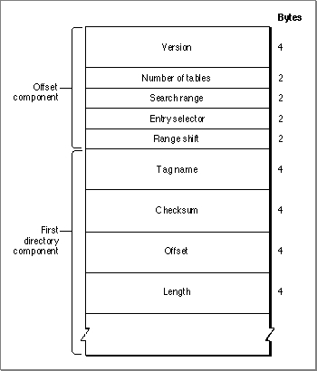

Legacy Document
Important: The information in this document is obsolete and should not be used for new development.
Important: The information in this document is obsolete and should not be used for new development.


The Font Directory
The font directory is a guide to the tables in the outline font resource. It provides you with the information that is needed to efficiently find the other parts of the resource. Each table in the resource has a tag name, a checksum, a location that is defined as an offset in bytes from the first byte of the resource, and a length in bytes. To use the data in a table, you first find the table's tag name in the font directory and then access its data starting at the specified location.The font directory consists of an offset component and a variable length array of directory entries, as shown in Figure 4-17.
Figure 4-17 The font directory
 The font directory offset component specifies the number of tables in the resource (and thus in the directory component). It contains several values that you can use to optimize searching through the directory components for a tag name:
The search range, entry selector, and range shift values are used together to construct a binary search through the directory if it is too large for an efficient sequential search. Note, however, that most programs that access kerning data use a linear search and do not make use of these values.
- Version. The version number of the font, given as a 32-bit fixed point number. For version 1.0 of any font, this number is $00010000.
- Number of tables. The number of tables in the outline font resource, not counting the font directory or any subtables in the font. This is an unsigned integer value.
- Search range. An unsigned integer value that is used, along with the entry selector and range shift values, to optimize a binary search through the directory.
- Entry selector. An unsigned integer value that is used, along with the search range and range shift values, to optimize a binary search through the directory.
- Range shift. An unsigned integer value that is used, along with the search range and entry selector values, to optimize a binary search through the directory.
If a font does contain a large number of tables, you can perform a binary search
of the directory components. You use the range shift value as the initial position in the directory to examine. Compare the tag name of the component at this position with
the one you are searching for. If the target tag name comes before the one you are searching for, search from the beginning of the directory to the range shift position. If the target name comes after the one you are searching for, search from that position to
the end of the directory.The font directory table entries are sorted alphabetically by tag name. Each component consists of the following elements:
Listing 4-2 shows a function that determines the checksum of a given table.
- Tag name. The identifying name for this table, such as
'cmap'.- Checksum. The checksum for this table, which is the unsigned sum of the long values in the table. This number can be used to verify the integrity of the data in the table.
- Offset. The offset from the beginning of the outline font resource to the beginning of this table, in bytes.
- Length. The length of this table, in bytes.
Listing 4-2 Calculating the checksum of a given table
TYPE LongPtr = ^LongInt; FUNCTION MyCalcTableChecksum (table: LongPtr; lngth: LongInt): LongInt; VAR sum : LongInt; mask: LongInt; BEGIN sum := 0; WHILE lngth > 0 DO BEGIN IF lngth > 3 THEN sum := sum + table^ ELSE BEGIN mask := BitShift($FFFFFFFF, 8 * (4 - lngth)); sum := sum + BitAnd(table^, mask); table := LongPtr(ord(table) + 4); lngth := lngth - 4; END; END; MyCalcTableChecksum := sum; END;